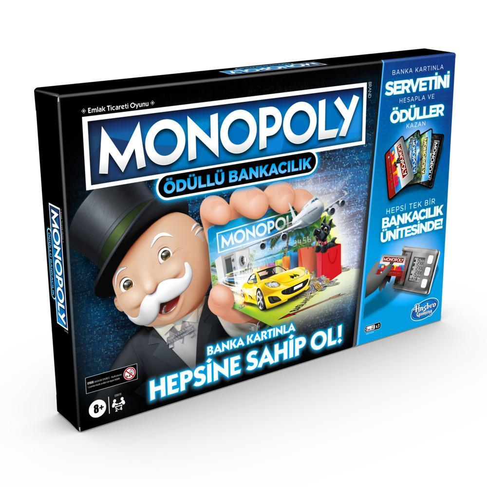

MONOPOLY DİJİTAL BANKACILIK’TA NELER YENİ?
Evler
Bu oyunda ev kurmak için bir renk grubundaki tüm arsalara sahip olmanıza gerek
yok! Sahip olduğunuz her arsaya hemen bir ev kurabilirsiniz!
Evinizi, hanenin renk bandında “1” yazan yere koyun. Burası hanenin kira
seviyesini gösterir!
Bir oyuncu sahip olduğunuz bir hanede durakladığında sadece kira geliri elde
etmekle kalmazsınız; aynı zamanda kira seviyeniz de bir kademe yükselir.
Sahibi olduğunuz bir hanede siz duraklarsanız, yine kira
seviyeniz bir kademe yükselir.
Kira seviyeniz her yükseldiği ya da düştüğünde evinizin yerini
değiştirmeyi unutmayın! Her arsaya sadece bir ev kurulabilir.
En yüksek kira seviyesi 5’tir ve kira seviyesi 1’in altına düşemez. (Ancak borç
ödemesi nedeniyle bir mülk Banka’ya geri verildiğinde, bu mülk tekrar sahipsiz bir
arsa olur ve kira seviyesi sıfırlanır.)
Her arsanın bir Tapu Senedi kartı vardır. Bu kartın üzerinde 5 kira seviyesinin değeri
yer alır
Kira seviyenizi (evinizin nerede durması gerektiğini) takip edemediğiniz bir durumda, sahip olduğunuz herhangi bir mülkün kirasını öğrenmeniz çok kolay.
Tapu Senedi kartını okutun.
Sonrasında hemen butonuna basın, yoksa ünite sizin bu arsayı satın almak ya da kira ödemek istediğinizi düşünür.
Eğer butonuna basmazsanız, ünite 10 saniye içinde otomatik olarak ana ekran moduna geçer.
Oyun Alanı
Oyun alanındaki arsa isimlerini MONOPOLY’nin klasik versiyonundan
hatırlayabilirsiniz. Ancak bu oyunda Şans ve Kamu Fonu haneleri yer almıyor. Onun
yerine Aksiyon ve Yer haneleri var.
Aksiyon hanesinde durakladığınızda bir Aksiyon kartı çekmeniz gerekir. Bu kart; kira
seviyenizi yükseltebilir ya da düşürebilir, para kazandırıp kaybettirebilir ve hatta sizi
Kodes’e gönderebilir.
Yer hanesinde duraklarsanız para ödeyerek oyun alanı üzerinde istediğiniz bir arsa
hanesine ilerleyebilirsiniz. Bu şansı ister bir haneyi satın almak, ister sahip olduğunuz
bir hanenin kira seviyesini yükseltmek için kullanabilirsiniz.
Bu oyunda oyuncularla anlaşma yapamazsınız. Ancak (akıllıca kullandığınız takdirde)
bu hane, aynı renk grubundaki arsalara sahip olmanıza yardımcı olabilir.
Para, Para, Para!
Oyunda hiç nakit para olmadığını fark etmişsinizdir. Dijital Banka ünitesi sizin için her
şeyi kolayca ve hızla yapar!
• Banka kartı ile servetinizin (para ve arsaların) hesabını tutar.
• Tapu Senedi kartları ile sahip olduğunuz mülkleri ve hepsinin kira seviyelerini takip
eder.
• Aksiyon kartları ile hanenizin çevresinde neler olup bittiğini izler.
• Okutulan her kart bir ses çıkarır. Eğer sesi duymazsanız, kart okunmamış demektir!
İYİ EĞLENCELER!